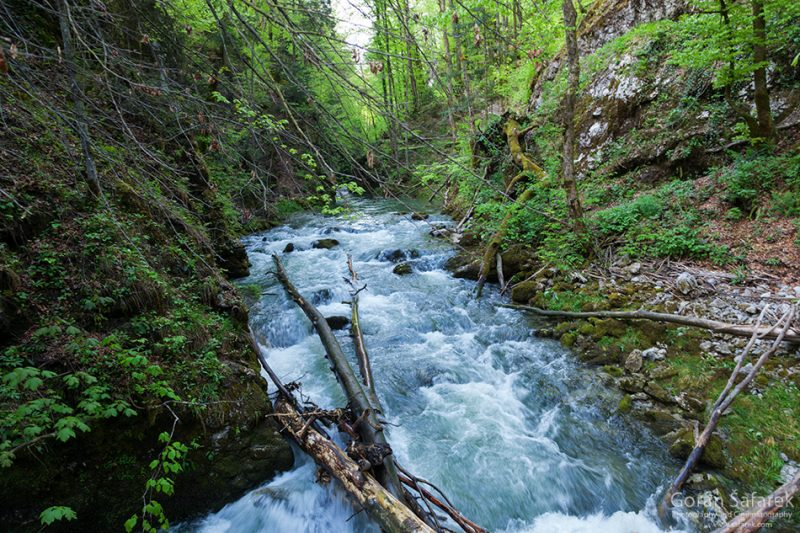

As you continue in the direction of moving water, the roar of rushing currents begins to grow louder. You pause at the bank of a fast-moving river. You’re so close to being able to drink from it, but the bank’s slope into the water is pretty steep, and maneuvering down looks like it’ll be risky. Judging from the speed of the river, you don’t think you’d be able to swim out if you fell in.
Meanwhile, you think you can faintly hear warning calls of a crow or raven in the distance.
What do you do?
—> Take the risk and step down. Your throat is killing you and you need the water.
—> It doesn’t look like it is worth the risk. Resist the urge for water and see what the bird wants.